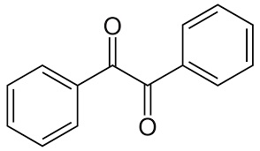
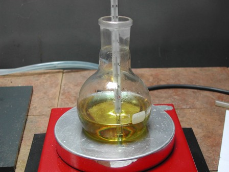
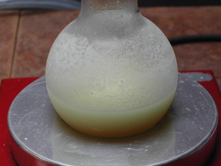

-"Chissà con chi mi verrà in mente di "sposare" questo benzoino? E che "figli" genererà?"-
Così avevo terminato la discussione sulla condensazione benzoinica il 20 aprile scorso.
Ora è maturato il previsto piccolo seguito: come l'aldeide benzoica aveva generato il benzoino, ora il benzoino ha generato un successore... e non è finita: c'è anche un motivo di aggancio che prendo come innocente pretesto per il lavoretto odierno.
Durante la navigazione mi sono imbattuto in un interessante lavoro svolto nel paese degli Ayatollah, presso l'Istituto Pasteur di Teheran.
I bravi Ashnagar, Gharib e Amimi sono partiti niente meno che dalle mandorle... per produrre la 5,5-difenilidantoina (fenitoina)!
Dicono i tre chimici che siccome la fenitoina (un importante farmaco antiepilettico, anticonvulsivante, antiaritmico e ansiolitico) viene importata in Iran sull'ordine delle 5 ton annue, hanno provato a produrla partendo da un materiale economico e facilmente accessibile nel loro paese, appunto le mandorle!
Qualsiasi modo ingegnoso di arrangiarsi mi riesce sempre stimolante e mi ha fornito lo spunto per provare a fare la fenitoina.
Però ho saltato il primo autarchico e altissimo scalino (la cui resa sarebbe inferiore allo 0,5%...) e anzichè dalle mandorle sono partito dalla buona benzaldeide, già usata per fare il benzoino citato all'inizio.
[Apro una parentesi: vicino al mio lab è sempre vissuta, fin da quand'ero bambino e anche prima, una bella e grande pianta di mandorle AMARE, ricche di amigdalina... Ora si dà il caso che l'anno scorso anche quell'albero sia morto stecchito, come purtroppo vedo spesso accadere nella natura che mi circonda. Tanti antichi castagni di quattro-cinque secoli secchi e morti nell'arco di un decennio... e così via per altre grandi piante. Niente è eterno, ma sembra che negli ultimi tempi gli accadimenti naturali che fanno passare dal verticale all'orizzontale abbiano subito una preoccupante amplificazione e accelerazione].
Poichè il prodotto finale che mi sono proposto sarà argomento di un post successivo, vediamo ora la sintesi dell'intermedio di oggi, ovvero il benzile.

Benzoino e Benzile
Come si può vedere, il benzile è un prodotto dell'ossidazione del benzoino, che può essere effettuata in due modi principali: per ossidazione con acido nitrico oppure (più elegantemente) con un metodo catalitico con acetato di rame.
Avendo poca materia prima a disposizione ho scelto il primo metodo, del quale ero più sicuro.
Materiali occorrenti:
- Benzoino C6H5-CH(OH)-CO-C6H5
- Acido nitrico HNO3
- Etanolo
- Vetreria opportuna
- In palloncino da 100 ml porre 15 ml di HNO3 conc. e aggiungere a piccole porzioni mescolando 3 g di benzoino.
Riscaldare su bagno d'acqua bollente (o con termomanto a circa 100° con termometro immerso nel pallone) per circa un'ora e mezza.
Si nota subito l'inizio dell'ossidazione dallo svolgersi di fumi rossi di ipoazotide NO2; eseguire quindi l'esperienza sotto cappa o in un luogo adatto alla situazione.
(Nel mio caso ho una finestrella immediatamente sopra il bancone, che fa tiraggio naturale verso tutto ciò che di gassoso si svolge dai miei alambicchi).

Alla fine della reazione, quando non si svolgono più ossidi di azoto, gettare la soluzione in 60 ml di acqua ghiacciata, e mescolare per favorire la cristallizzazione in un solido giallo.
Filtrare alla pompa e lavare bene con piccole porzioni di acqua fredda per eliminare tutte le tracce di acidità residua e ricristallizzare poi da etanolo.

Il benzile (un alfa dichetone) si presenta nel mio caso come una polvere microcristallina gialla, praticamente inodora, p.f. 95° Conducendo la ricristallizzazione in maniera molto più lenta di come ho fatto questa volta, si otterrebbe una forma cristallina migliore anzichè una polverina abbastanza insignificante, ma lo scopo era solo ottenere il prodotto come intermedio (purtroppo ho perso l'immagine finale).
Il benzile è molto fotosensibile: mettendolo al sole scurisce immediatamente per azione dei raggi ultravioletti, che innescano reazioni radicaliche di cross-linking; è usato infatti come promotore di polimerizzazioni.
Il prossimo step, fra un po' di tempo, sarà la trasformazione del benzile nella finale 5,5-difenilidantoina.